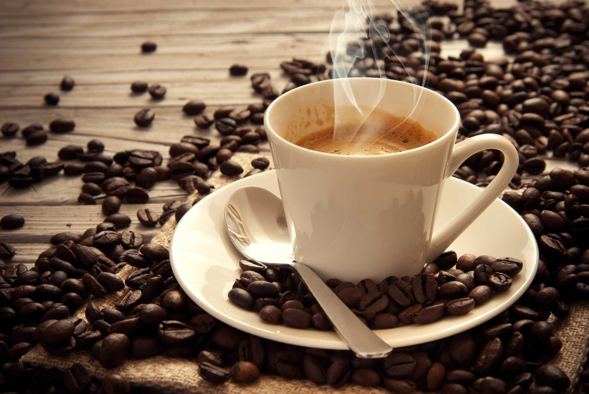
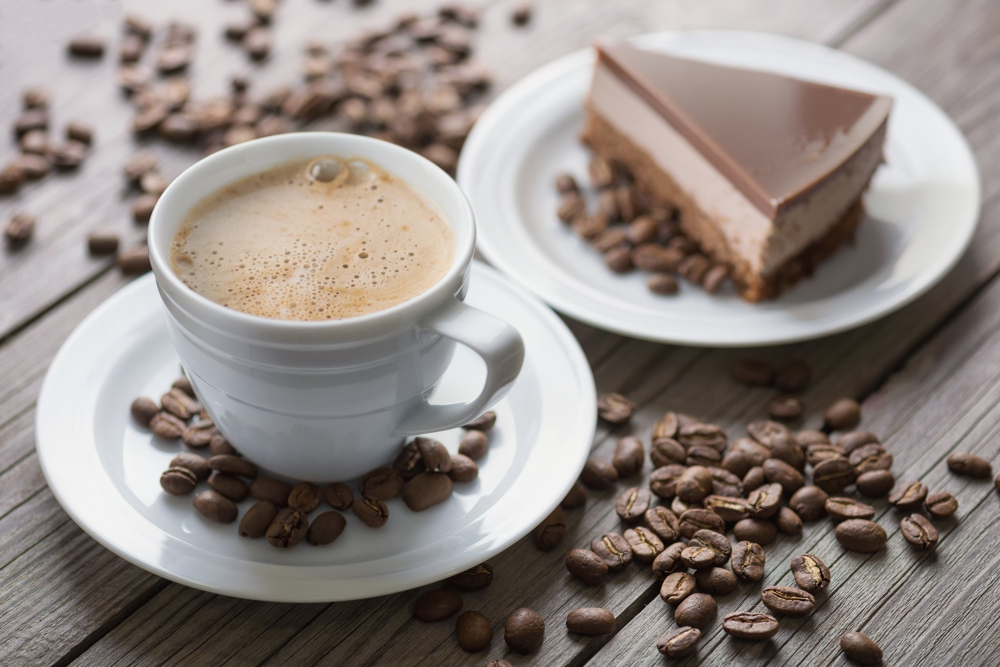

Мифы о кофе
Самый противоречивый напиток, о котором ходит множество слухов, – это кофе. Его не пьют только ярые противники, на слух и запах не переносящие намека на кофе. Никто не остался равнодушным к этому древнему зелью, бодрящему и согревающему. Существует огромное множество рецептов его приготовления, так что каждый человек может насладиться кофе по своему вкусу. Если Вы привыкли начинать утро с чашечки этого напитка, пора разобраться, где мифы о кофе, а где правда.
Кофеин вызывает привыкание
Это не так. Конечно, если Вы ежедневно употребляете несколько чашек кофе в день, а потом резко прекращаете его пить, Вы действительно ощутите недомогание, возможны головные боли, вспышки раздражительности. Однако подобный эффект будет наблюдаться с прекращением любого продукта, который Вы будете употреблять так же часто, как например, сахар или мясо. Рекомендуется постепенно снижать дозу кофе до общепринятой. Кстати, в медицине кофеин широко используется в качестве составляющей для лекарств, поскольку он усиливает их действие.
Кофе вызывает остеопороз и рак
Ученые отрицают тот факт, что кофе может стать причиной развития опухолей и рака груди у женщин. Что касается остеопороза, этот миф о кофе имеет правдивую основу. Кофеин действительно участвует в вымывании кальция из организма, вследствие чего кости становятся хрупкими, однако стакан молока в день спасет Вас от этой напасти. И это несмотря на то, что молоко – не самый богатый кальцием продукт! Немного сыра или орехов, чтобы восполнить потерянный кальций от чашки кофе, и Ваш организм сыт и доволен.
Кофе вреден для беременных
Напомним, что кофеин содержится и в чае, и в шоколаде, поэтому назвать кофе вредным для беременных, значит сказать им, что им также вредно пить чай. Конечно, стоит сократить количество кофеина, если женщина находится в положении, поскольку кофе способствует выработке гормонов стресса, а тревоги не идут на пользу будущей маме. Кроме того, беременным женщинам и без кофе приходится переходить на питание, обогащенное кальцием, ввиду формирования нового организма.
Кофе без кофеина теряет вкусовые свойства
Если Вы хотя бы раз пробовали кофе без кофеина, то поймете, что это не так. Кофеин удаляется из еще зеленых бобов и не влияет на вкус. Отличный выход для тех, кто не может позволить себе пить кофе, но отказаться от этого напитка не хочет.
Если кофе не вреден, он, по крайней мере, бесполезен
Этот миф о кофе остается мифом. Одна чашка кофе действительно бодрит и способствует улучшению концентрации. Кроме того, кофеин является природным антиоксидантом, а значит, защищает клетки организма от разрушающего воздействия свободных радикалов. Омоложения при этом не происходит, но снижается риск сердечных приступов и развития рака.
На самом деле полезное действие кофеина на организм вовсю изучается на данный момент. Уже доказана его польза при лечении астмы и аллергии.
Кофе помогает бороться с алкоголем в крови
Это не так. Более того, ни в коем случае нельзя пить кофе, находясь в состоянии алкогольного опьянения. Кофе ненамного повышает артериальное давление, но если Вы выпьете его после изрядной доли алкоголя, эта малость может стать чрезмерной нагрузкой на сердце.
От кофе появляется целлюлит
Эти мифы о кофе касаются женщин, так заботящихся о своей внешности. Они берут свое начало в мочегонном эффекте кофе. Напомним, эффект этот слабый, для того чтобы кофе вызвал обезвоживание клеток, пить его придется долго. Вы раньше получите тревожный звоночек от организма о том, что пора прекратить его пить, чем допьетесь до целлюлита. По иронии жизни скраб из молотого кофе используется для борьбы с этой напастью. Считается, что его применение ускоряет метаболизм и улучшает кровообращение в тканях. К слову, кофеин добавляют в антивозрастные кремы, они сглаживают поверхность кожи, уменьшая видимость недостатков.
Кофе влияет на сердце
Миф о кофе, от которого учащается сердцебиение, имеет некоторые основания. На самом деле одна чашка кофе не поднимет давление даже на тот уровень, на который оно поднимается от физических упражнений, например подъема по лестнице. Другое дело, если Вы пьете одну чашку за другой, тогда Вы получите не только временно возросшее артериальное давление, но и неприятные последствия со стороны ЖКТ. Кроме того, намекнем, что кофе обладает легким мочегонным эффектом: не увлекайтесь, все хорошо в меру. Что касается того, что кофе поднимает уровень холестерина в крови, – это расхожее заблуждение.
Кофе нужно пить, пока он горячий
Это исключительно дело личных предпочтений. Практика показывает, что между горячим кофе и холодным нет никакой разницы в плане его пользы, а что касается вкусовых качеств – это строго индивидуально для каждого из вас. Но зато доподлинно известно, что врачи не рекомендуют пить только что приготовленный кофе: любые слишком горячие напитки вредны для пищевода, желудка и ротовой полости.
Обжарка влияет на крепость кофе
Нет, обжарка не влияет на содержание кофеина в зерне. Вопреки двум диаметрально противоположным точкам зрения утверждающим, что термообработка делает зерно менее или более крепким, на самом деле количество кофеина не меняется: он НЕ разрушается при обжарке (сильно обжаренный кофе не может быть менее крепким) и не увеличивается в количестве (сильно обжаренный кофе не может быть более крепким).
Кофе помогает похудеть
Не совсем. Стимулирующий эффект кофеина может незначительно (очень незначительно!) повысить ваш метаболизм, но не настолько, чтобы это сказалось на долгосрочной потере веса. Что касается подавления аппетита, то здесь палка о двух концах: да, вы, возможно, будете меньше есть, пока пьете кофе, но к вечеру недостаток необходимых КБЖУ напомнит о себе удвоенным чувством голода, и тут появляется большой риск переедания. Но что действительно верно, так это то, что кофе является хорошим «разрешенным допингом» для более продуктивных занятий спортом (без которых ни одна диета не даст нужного результата).
О кофе

Кофе — это не только один из самых бодрящих, ароматных напитков, который уже давно вошел в повседневный обиход, но и название рода вечнозеленых растений, из плодов которых его получают Кофеин является самым употребляемом наркотиком во всем мире. И попадает он в наш организм именно с кофе...
История кофе и его названия
История кофе началась много лет назад. Впервые кофе появился, Вы не поверите, примерно в 850 году нашей эры. По самой известной легенде, рассказывающей об истории происхождения кофе, пастух из Эфиопии Калди заметил, что его козы, которые днем поедают листья и яркие красные ягоды неприметного растения, ночью слишком возбуждены и не...
День кофе

Как Вы думаете, какой праздник больше всего любят кофеманы? Традиционно подавляющее большинство торжеств связано с употреблениемалкогольных напитков. Но в последние несколько лет пришел праздник и на улицу почитателей бодрящего напитка. В День кофе можно испытывать на себе новые рецепты или наслаждаться уже полюбившимися....